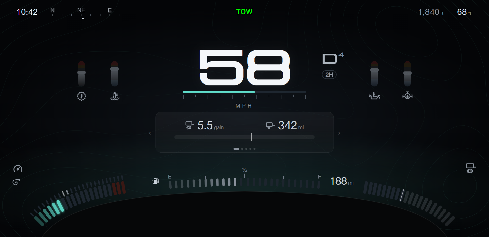
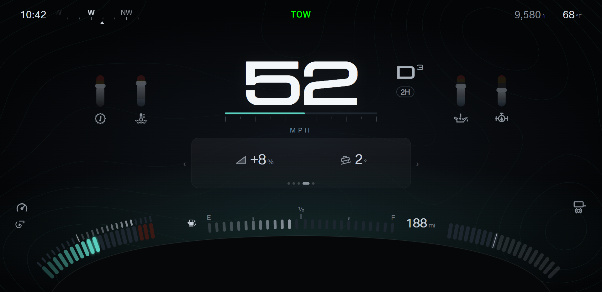
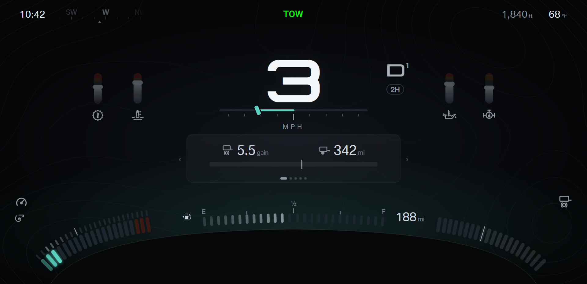
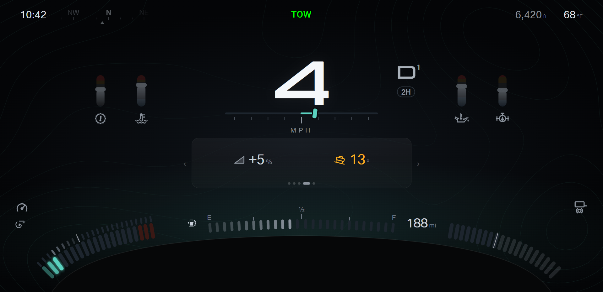
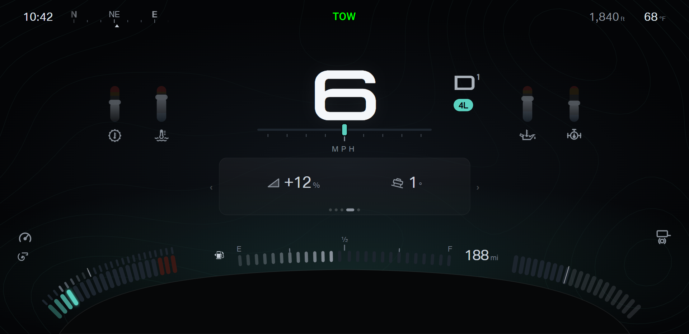
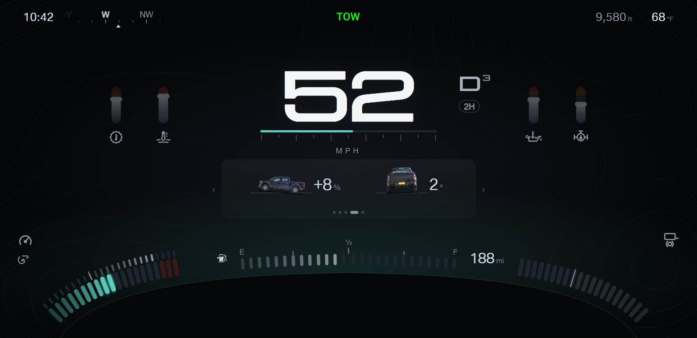
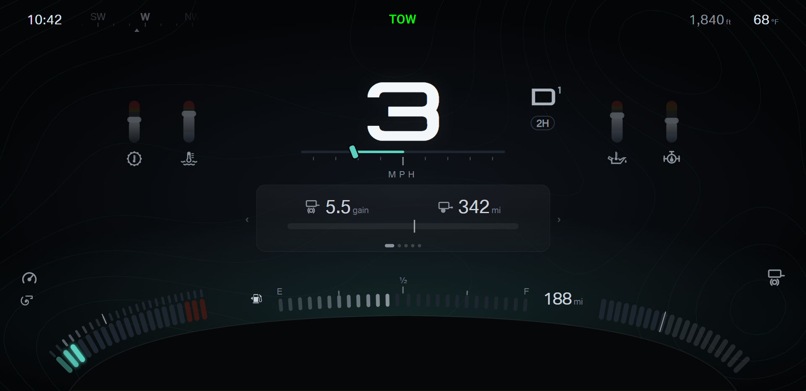
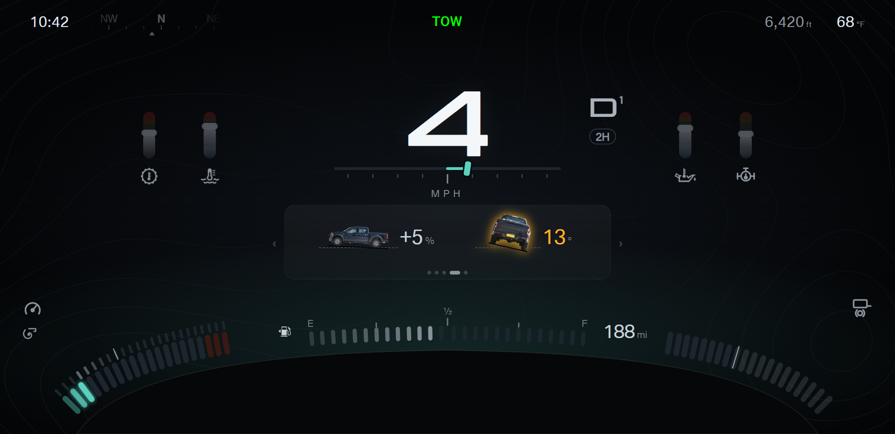
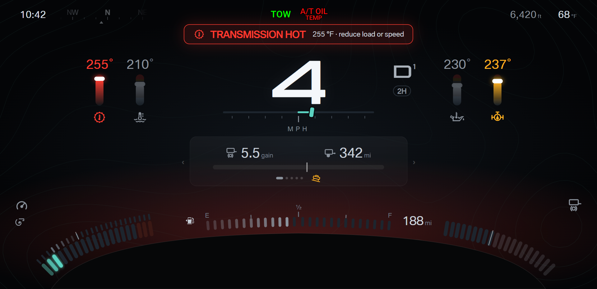

F150 cluster · Design round 20 · Wheel angle, grade and roll, heading, and altitude on Towing A
Towing A is locked as round 19 option A (ruler). Round 20 adds the wheel angle, the grade and roll (level page),
the compass heading, and the altitude. The stock layouts (handoff/claude-dashboard ui1 to ui6) answer the firmware questions; the stock
compass is a reference for the data only, not for the behaviour.
Pick: open. Live demo of the heading tape: tow-a.html?turn=1 (a steady turn through north).
- Wheel angle: at crawl speed (8 mph and under) or in reverse, a steering bar takes the place of the speed scale. The fill runs from the center line
to the wheel angle; the knob is a tire seen from above. No number. Field: angle, getAngle() (MCU message 0x26). Stock shows the angle in every gear
while the factory setting "Wheel angle display" is on, so the MCU sends 0x26 in every gear. Positive = right.
- Level page: a fifth page, at every speed, as on the stock layouts. Grade in % and roll in degrees. The grade moves here from the engine page,
so one reading has one place; the engine page keeps rpm and boost (the left corner band also shows both).
Climb, descent, and tilt jump the panel to the level page. Fields: mPitch and mRoll from the motion sensor in the cluster; the firmware sets the sign and the zero.
- Tilt focus: at crawl speed or in reverse, a roll of 10° or more shows amber; 20° or more shows red. The motion sensor reads a fast corner as roll,
so the tilt focus does not trigger above crawl speed. The thresholds are design values, to tune on the truck.
- Heading tape: beside the clock, in the quiet grey, with N, E, S, and W brighter. At 5 mph and under the tape dims and holds the last heading.
- Altitude: beside the outside temperature, in feet. Field: getAltitude(): the GPS altitude with a GPS fix, otherwise the barometric altitude.
- A · Numbers: the grade and the roll as numbers with symbols, as on every other page. B · Truck images: the stock Ford side and rear images
(clipped to the truck only), turned to the true angle over a dashed level line, each with one number.
Heading tape: why not the stock compass
- Stock moves one tape image by getGpsBearing(), which turns bearings over 315° into negative values. A turn through NW sweeps the tape back across all 360°.
- Each GPS fix (about one per second) starts a 600 ms move, then the tape stops. The tape steps instead of turning.
- The bearing freezes at 5 mph and under without any sign. getCompassDir() also ends NW at 332.5° instead of 337.5°.
Firmware requirements for this tape:
- Draw every mark by the angle difference modulo 360, so the tape has no ends and no seam.
- Move the shown heading toward each new bearing the shorter way round: delta = (new − shown + 540) mod 360 − 180.
- Ease toward the bearing every frame (time constant about 0.8 s), so the tape glides between fixes.
- At 5 mph and under, hold the last heading and dim the tape.
Check: the demo turned through north for 9 s; the N mark moved at most 6.9 px per 100 ms, with no jump.
A · Numbers
highway: heading tape (NE) beside the clock, altitude beside the outside temperature

mountain pass at 9,580 ft: the climb jumps the panel to the level page

crawl at 3 mph, wheels turned left: the steering bar; the heading tape dims (held)

roll 13° at 4 mph, heading 352°: the panel jumps to the level page; roll in amber; the tape shows N with no seam

hot transmission and roll 13°: the temperature wins; the level symbol shows amber beside the dots

4L at 6 mph on a 12 % grade: the climb focus jumps to the level page

B · Truck images
highway: heading tape (NE) beside the clock, altitude beside the outside temperature
highway on the level page (the fifth page)
mountain pass at 9,580 ft: the climb jumps the panel to the level page

crawl at 3 mph, wheels turned left: the steering bar; the heading tape dims (held)

reverse at 2 mph, wheels turned right

roll 13° at 4 mph, heading 352°: the panel jumps to the level page; roll in amber; the tape shows N with no seam

hot transmission and roll 13°: the temperature wins; the level symbol shows amber beside the dots

4L at 6 mph on a 12 % grade: the climb focus jumps to the level page
true size